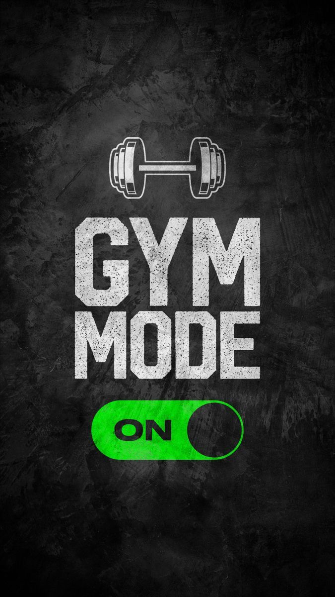

Entrenadores certificados
Un equipo con formación profesional te enseña la técnica correcta y te ayuda a progresar sin lesiones.
Entrena con guía profesional en Pinar del Río, sin importar tu nivel.
Ver servicios
Un equipo con formación profesional te enseña la técnica correcta y te ayuda a progresar sin lesiones.
Musculación, cardio y clases funcionales en grupos pequeños, desde tu primer día.
De lunes a viernes de 6:00 a. m. a 10:00 p. m., sábados de 7:00 a. m. a 6:00 p. m. y domingos de 8:00 a. m. a 12:00 m.